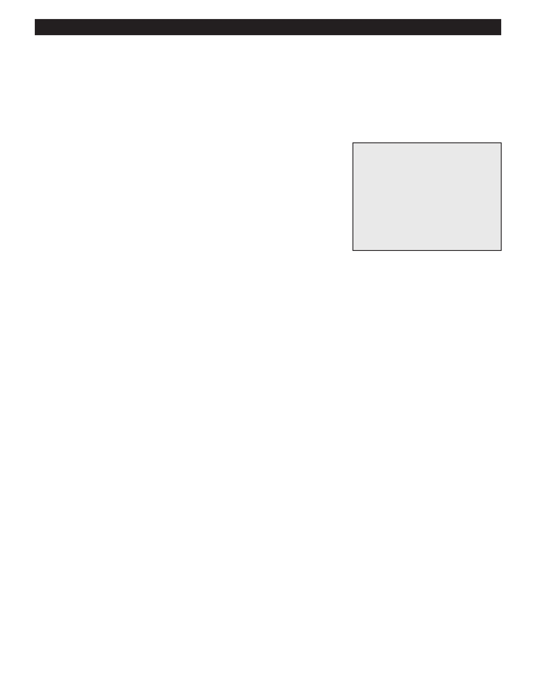

PA RT I C I PA N T R E S O U R C E G U I D E
Fixing a Leaky Garbage Disposal
Leaks can occur at a number of places on a garbage disposal. Let’s look at the three
most common culprits: the sink flange, the connection to the dishwasher, and the
discharge pipe.
Safety
Tools and Materials Needed
Lock and tagout the main service panel if you need to turn the power off.
Lockout/tagout device (if
Consider hand protection, particularly as you feel around for the source of the leak.
needed)
Screwdriver
Do not put your hands down the drain while working with the disposal.
Plumber’s putty (for resealing a
Be careful when lifting the disposal. It is heavy.
sink flange)
Replacement parts, if needed
(see how-to steps below)
Notes:
44